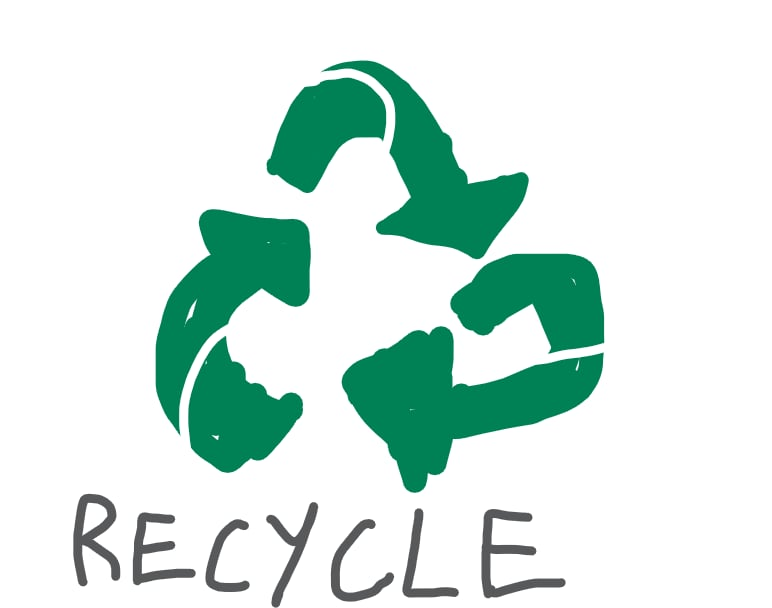

♻️ รีไซเคิล (Recycling)
ความหมาย
ประเภทของการรีไซเคิล
วัสดุที่สามารถรีไซเคิลได้
ประโยชน์ของการรีไซเคิล
ปัญหาและข้อจำกัด
ปัญหาและข้อจำกัด
-
การรีไซเคิล คือ กระบวนการนำวัสดุหรือสิ่งของที่ใช้แล้วกลับมาแปรรูป เพื่อนำไปใช้ใหม่อีกครั้ง
ลดการใช้ทรัพยากรใหม่ และลดปริมาณขยะที่ถูกทิ้ง
-
การนำกลับมาใช้โดยตรง (Reuse Recycling)เช่น ใช้ขวดแก้วหรือกล่องพลาสติกซ้ำ
การแปรรูปใหม่ (Reprocessing Recycling)เช่น นำขวดพลาสติกหลอมเป็นเม็ดพลาสติกใหม่
การรีไซเคิลพลังงาน (Energy Recovery)เช่น เผาขยะเพื่อผลิตพลังงานไฟฟ้า
-
📰 กระดาษ → กล่องกระดาษ, สมุด, กระดาษชำระ
🥤 พลาสติก → ขวดน้ำ, เส้นใยผ้า, ถุงใหม่
🍾 แก้ว → ขวดแก้ว, ภาชนะบรรจุ
🥫 โลหะ เช่น อะลูมิเนียม เหล็ก → กระป๋องใหม่, วัสดุก่อสร้าง
⚡ อุปกรณ์อิเล็กทรอนิกส์ (E-waste) → ชิ้นส่วนโลหะมีค่า
-
ลดปริมาณขยะและมลพิษ
ประหยัดทรัพยากรธรรมชาติ (ไม้ น้ำ น้ำมัน ฯลฯ)
ลดการใช้พลังงานในการผลิตใหม่
ลดการปล่อยก๊าซเรือนกระจก (ช่วยแก้ปัญหาโลกร้อน)
สร้างงานและรายได้จากธุรกิจรีไซเคิล
-
การคัดแยกขยะไม่ถูกต้อง → ทำให้รีไซเคิลยาก
ขยะปนเปื้อน (เช่น คราบอาหาร น้ำมัน) ทำให้รีไซเคิลไม่ได้
ต้นทุนการรีไซเคิลบางชนิดสูงกว่าใช้วัตถุดิบใหม่
ระบบจัดเก็บและโรงงานรีไซเคิลยังไม่ครอบคลุมทุกพื้นที่
-
รณรงค์ คัดแยกขยะที่ต้นทาง (บ้าน โรงเรียน บริษัท)
ตั้ง จุดรับคืนบรรจุภัณฑ์ เช่น ขวด กระป๋อง
สนับสนุนธุรกิจที่ใช้ บรรจุภัณฑ์รีไซเคิล
พัฒนา เทคโนโลยีรีไซเคิล ให้มีประสิทธิภาพและคุ้มค่า
ออกกฎหมายควบคุม เช่น "ผู้ผลิตต้องรับผิดชอบบรรจุภัณฑ์" (EPR)